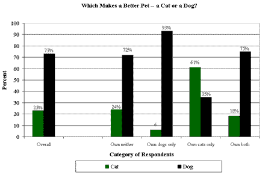

Sunny

My dog is named Sunny he is a rescue and he is the age of 5. He just had his b-day on July 5th and he loved it. We never had a dog before well at least not me but sunny has made the dog experence the best.
I want every one to have a dog bacause they are fun to play with and they are man`s best frend.
They can chear you up when your down or not fealing well. What are you waiting for go get a rescue dog there just awsome!
How we found him
The story behind sunny is he was found on the street and he was taken in by anamal care. He was about to be put down because there was to many dogs in the place but before they put him down we adopded him. We have always wanted a dog but when my mom saw sunny she was all in.
When we picked him up and took him in the car back to our house he was a little bit scared because he never had a faimly before but he became a part of the faimly in the first week we go him. He has always been his happy self and he will stay like that for ever.
What he likes to do
He likes to eat food
ALOT of food. He also so loves to play with other dogs and play outside. His best dog frend is a dog named Sam and he was rescued to and they are great frends together. He also LOVES belly rubs and being with the faimly. He is scared of thunder storms but we gave him a thunder blanket. What is does it wraps around him and makes him feel huged and he gets into a ball and goes to bed. But we try to make him feel better and its working. He always stays happy and nice to everyone.
Any ways he loves people but sometimes he is protective of us and he sometimes barks but he his getting better about barking. He does have a habbit of chasing squarls and deer. He once killed 2 squarls in one week we dont know why he is dong it. But now after we talked to him and told him not to do it any more he is going after them less than when we got him. All it takes is traing and they will learn.
What he eats
His only eats In the morning and at dinner not lunch because he needs to keep in shape because hes mostly sitting inside bacause we are at school and my mom and dad are at work. For his main food he eats Blue Buffalo he loves it its helthy and is recomended by alot of pet stores.
For treats he will eat any brand and he will like it. So thats basicly all of the food he eats and some times we gave him people food like steak or other meats and he likes it thats like a bonus treat for him.
Why should you rescue a dog?
Rescueing a dog is good because these dog`s dont have a home and they were found alone and treated horable and having a new faimly is a great thing for them to get a new life. But the worst part is if there is to meny dogs in the shelter they have to put some down to make room in the shelter.
That happens when no one adops a dog and new dogs come in. Thats why rescuing a dog is better than getting a dog in the pet store because dogs are getting killed when you buy one at the pet store. So RESCUE A DOG!!! :D
Are dogs better than cats?
Ok before you start telling me that I am making cats sound dumb and useless. This thing is all opinion based and if you think cats are better than dogs go for it budy i=I have to problem with you. Any ways I think dogs are better than cats because they are fun to play with and they are more active than cats. Also dogs can do more cool tricks and you can train them to do a alot. But all cats do is eat and sleap and they are known for scraching people and hurting people but dogs are frendly and sweat and harmless.

I found a site that has a pole of how many people like dogs vs how maky people like cats. Here is the link go check it out its prety cool. Link: http://www.gallup.com/poll/1933/public-dogs-better-pets-than-cats.aspx So as you can see this link and the chart shows that most people like dogs better than cats. Now if your a cat lover and you dissagre than that`s the way you want to go. But back to cat`s they arnt that intresting and they need more work for them doing nothing. But the work for a dog is worth it bacause they play with you and they do so mutch more. Yep so thats it for cat`s vs dogs and I chose dogs because they are fun to play with and its worth to get one.
What my dog can and can`t do
So here is a chart of what tricks and things my dog can and can not do. This is based of what he knows now but we are trying to teach him new things as we go. Yep so enjoy:D
| What my dog can and can`t do |
| Can |
Can`t | |
| High five |
Flips |
| Jump over a 5 foot fence |
Climb a tree |
| Catch a ball in mid air |
Catch a deer |
| Eat a bone under 2-3 min |
Swim well |
| Roll over for a belly rub |
Catch a fish |
Yep so thats basicly what my dog can and can`t do he can do cool things that we did not teach him he just learned by him self. Its very funny when he does one of the trick`s because he makes a funny face and he makes a funny grouling sound. Thats why we like sunny he learn`s things by him self slowly but its funny when he does them. If you go the extra photos section you can see some of sunny`s funny photos and some of the funny faces he makes when he does some of his tricks.